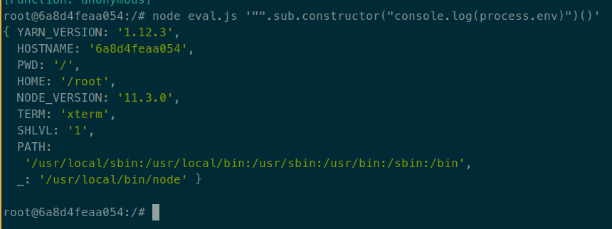

Participando en un programa de bug bounties encontré un sitio con una
funcionalidad bastante interesante que permitía filtrar un conjunto de datos
según una expresión controlada por el usuario. Es decir, podía ponerle algo
como book.price > 100 para que solamente me muestre los libros que salgan más
que $100. Usando true y false como filtros me mostraba todos y ningún
resultado, respectivamente. Por lo que podía saber si el resultado de la
expresión que le pasé se evaluaba a verdadero o falso.
Como la funcionalidad me llamó la atención seguí probando con expresiones más
complejas como (1+1).toString()==="2" (verdadero) y (1+1).toString()==="5"
(falso). Esto es claramente código JavaScript, así que supuse que la expresión
se le pasaba a una función similar a eval en un server corriendo NodeJS, por
lo que parecía que estaba cerca de encontrar un RCE (remote code execution).
Sin embargo, cuando probaba poner expresiones un poco más complejas el sistema
me tiraba un error diciendo que la expresión era inválida. Asumí que lo que le
mandaba pasaba por algún sistema de sandbox para JavaScript.
Los sistemas de sandbox que se usan para ejecutar código ajeno en un entorno
restringido suelen ser muy difíciles de implementar, y generalmente existen
maneras de bypassear estas protecciones para así ejecutar nuestro código con
privilegios normales. Esto es especialmente cierto si se trata de limitar el
uso de lenguajes complejos, llenos de funcionalidades ocultas como es el caso
de JavaScript. Como el problema ya había logrado tomar mi atención decidí
dedicarle un tiempo importante a tratar de romper esta sandbox para aprender un
poco del funcionamiento interno de JavaScript, y de paso ganar algunos dólares
en caso de encontrar un RCE.
Lo primero que hice fue identificar qué librería usaban para implementar la
sandbox, dado que el ecosistema de NodeJS se caracteriza por tener decenas de
librerías que hacen exactamente lo mismo, y en muchos casos todas lo hacen mal.
También se podía tratar de una solución implementada por el mismo sitio y no
por una librería, pero como es algo muy complejo me pareció muy difícil que se
hayan tomado el trabajo de desarrollar algo así, por lo que descarté esta
posibilidad inmediatamente.
Finalmente, analizando los mensajes de error de la aplicación llegué a la
conclusión de que estaban utilizando static-eval, una librería
no muy conocida (aunque escrita por substack, alguien bastante
conocido dentro de la comunidad de NodeJS). Si bien no fue hecha con el
propósito de ser usada como una sandbox para ejecutar código desconocido (debo
reconocer que todavía no entendí para qué fue hecha), su documentación da a
entender esto. En el caso del sitio que estaba auditando, sí se usaba esta
librería como una sandbox.
Rompiendo static-eval
La idea de static-eval consiste en utilizar la librería esprima para
parsear la sintaxis del código JS que le mandemos y generar así un AST
(Abstract Syntax Tree) de nuestra expresión. Una vez hecho esto, dado el
AST generado y un objeto con las variables que se quiere que estén disponibles,
se trata de evaluar la expresión. En caso de encontrar algo un poco fuera de lo
común, la función falla y el código no es evaluado. Al principio esto me
desmotivó un poco porque me di cuenta de que el sandbox era muy restrictivo con
el código que se le pasaba. Ni siquiera me permitía poner un for o un while
dentro de la expresión por lo que hacer algo que requiera un algoritmo
iterativo se hacía casi imposible. De todas formas, seguí tratando de
encontrarle algo.
Sin encontrar ningún bug a simple vista, me puse a ver los commits y
pull requests del proyecto en GitHub. En particular,
el pull request #18 arregló dos bugs que permitían
escaparse de la sandbox, exactamente lo que estaba tratando de encontrar.
También encontré un blogpost del autor del pull request que
explicaba con más detalle estas vulnerabilidades. Lo primero que hice fue
probar estas técnicas en la aplicación que estaba testeando, pero
desafortunadamente para mí, la versión de static-eval que utilizaban ya había
corregido estos fallos. Sin embargo, saber que alguien más ya había roto la
librería me dio más confianza así que seguí buscando otra forma de explotarla.
A continuación, me puse a analizar más profundamente las vulnerabilidades
ya encontradas para ver si me podía inspirar en alguna para encontrar algo
nuevo.
Análisis de la primera vulnerabilidad
Una de las vulnerabilidades encontradas consistía en hacer uso del function
constructor. Esta técnica es utilizada frecuentemente para
bypassear sandboxes. Por ejemplo, varias de las formas de bypassear la sandbox
de angular.js para lograr un XSS usan distintas
variaciones que terminan accediendo y llamando al function constructor.
También fue usado para bypassear librerías similares a static-eval, como
vm2. La siguiente expresión demuestra la existencia de la
vulnerabilidad accediendo a las variables de entorno del sistema (algo que
debería estar restringido ya que el código se ejecuta en una sandbox):
"".sub.constructor("console.log(process.env)")()
En este código, "".sub es una forma corta de obtener una función (también hubiese
servido algo como (function(){})). Luego se accede a su constructor, que es una
función que crea nuevas funciones con el código que se le pase como argumento.
Esto vendría a ser como una función eval, solo que en vez de evaluar la expresión
inmediatamente, retorna una función que ejecutará el código recién cuando sea
llamada. Esto explica los paréntesis que están al final del payload, que hacen
que se llame a la función creada.

No solo es posible mostrar las variables de entorno, sino que también se
pueden ejecutar comandos en el sistema, usando la función execSync del módulo
child_process de NodeJS. El siguiente payload va a retornar la salida del
comando id del sistema:
"".sub.constructor("console.log(global.process.mainModule.constructor._load(\"child_process\").execSync(\"id\").toString())")()
El código es similar al anterior, excepto por el cuerpo de la función que se
crea. En este caso, global.process.mainModule.constructor._load viene a ser
lo mismo que la función require de NodeJS que se usa para cargar módulos. Por
alguna razón que no entendí, esta función no está disponible bajo el nombre
require dentro del function constructor.

El fix para esta vulnerabilidad consistió en bloquear el acceso a propiedades
de objetos que sean una función (para esto está el typeof obj == 'function'):
else if (node.type === 'MemberExpression') {
var obj = walk(node.object);
// do not allow access to methods on Function
if((obj === FAIL) || (typeof obj == 'function')){
return FAIL;
}
Esto es algo bastante sencillo, pero sorprendentemente efectivo. El function
constructor está disponible, naturalmente, solamente en funciones, así que no
es posible acceder a este. Además el typeof de un objeto no se puede
modificar, por lo que cualquier cosa que sea una función va a tener su typeof
fijo a function. No encontré ninguna forma de bypassear esta protección así
que seguí con la siguiente vulnerabilidad que habían encontrado.
Análisis de la segunda vulnerabilidad
Esta vulnerabilidad, a diferencia de la primera, es bastante más sencilla: el
problema era que la sandbox permitía que se creen funciones anónimas, pero no
chequeaba que el código de estas funciones no tenga nada malicioso, sino que se
lo pasaba directamente al function constructor. El siguiente código tiene el
mismo efecto que el primer payload que se utilizó en este blogpost:
(function(){console.log(process.env)})()
También se puede cambiar el cuerpo de la función para que use el execSync
y muestre la salida de ejecutar un comando. Voy a dejar esto como ejercicio
para el/la lector/a.
Un posible fix para esto hubiese sido prohibir la declaración de funciones
anónimas dentro de las expresiones. Sin embargo esto hubiese hecho imposible
el uso benigno de las funciones anónimas (como por ejemplo, hacer un map
a un array). Se tuvo que hacer un fix que permita el uso de funciones
anónimas "benignas" pero bloquee las maliciosas. Para esto, static-eval
analiza el cuerpo de la función al momento de su definición para
detectar que no se hagan cosas malas, como acceder al constructor de
una función.
Este fix resultó ser mucho más complejo que el de la primera vulnerabilidad,
y además Matt Austin (el autor del fix) hizo entender que no estaba seguro
de que esto funcione perfectamente. Así que me incliné por buscar un bypass
a este fix.
Encontrando una nueva vulnerabilidad
Una cosa que me hacía bastante ruido es que se decidía si la función era buena
o mala solamente al momento de definirla, y no al momento de llamarla. Es
decir, que no se tenía en cuenta el valor de los argumentos de la función, ya
que esto requeriría que se haga un chequeo al momento de llamar a la función.
Mi idea siempre fue tratar de acceder, de alguna forma, al function constructor
para que me deje crear cualquier función libremente, esquivando el fix de la
primera vulnerabilidad que me lo impedía ya que no me dejaba acceder a
propiedades de una función. Sin embargo, ¿qué pasaría si trato de acceder
constructor de un parámetro de la función? como su valor no es conocido al
momento de definir la función, quizás esto pueda confundir al sistema y hacer
que nos la deje pasar. Para probar mi teoría usé esta expresión:
(function(algo){return algo.constructor})("".sub)
Si esto retornara el constructor de una función ya tendría un bypass efectivo.
Lamentablemente no fue el caso, ya que static-eval bloquea la función si se
accede a una propiedad de algo cuyo tipo es desconocido al momento de
definición de la función (en este caso, el argumento algo).
Un feature de static-eval que seguramente utilicen prácticamente todas las
aplicaciones que usan la librería es que se pueden pasar algunas variables que
se desea que estén disponibles dentro de la expresión. Por ejemplo, al
principio del post usé la expresión book.price > 100. En este caso, el código
que llama a static-eval le estaría pasando el valor de la variable book.
Esto me produjo otra idea: ¿y si una función toma un argumento con el nombre de
una variable ya definida? como no puede conocer el valor real del argumento,
quizás use el valor inicial de la variable. Esto sería muy útil para mí.
Supongamos que existe una variable book que es un objeto. Entonces la siguiente
expresión:
(function(book){return book.constructor})("".sub)
tendría un resultado muy satisfactorio: al momento de definir la función se
chequearía si book.constructor es una expresión válida. Como book es
inicialmente un objeto (cuyo typeof es object) y no una función, esto
se consideraría una expresión válida y la función sería creada. Al
momento de llamar a esta función, sin embargo, book sí será una función
y entonces retornará el function constructor.
Lamentablemente, esto tampoco funcionó ya que el autor del fix consideró
este caso. Al momento analizar el cuerpo de una función, el valor
de todos los argumentos se fija en null, sobreescribiendo el valor de
las variables iniciales. Este es un fragmento del código que hace eso:
node.params.forEach(function(key) {
if(key.type == 'Identifier'){
vars[key.name] = null;
}
});
Este código toma el nodo del AST que define la función, itera por cada uno de
sus parámetros cuyo tipo sea Identifier, obtiene su nombre y setea a null el
atributo de vars con ese nombre. Si bien el código parece correcto, tiene una
falla bastante común al programar, que es que no está contemplando todos los
casos posibles. ¿qué pasa si key.type es algo raro y tiene un valor diferente
de Identifier? en vez de hacer algo prudente como decir "no sé qué es esto
así que mejor voy a bloquear a la función" (como si fuera una whitelist),
ignora el parámetro y sigue con los demás (como en una blacklist). Esto
significa que si logro que el nodo que representa a un argumento de mi función
tenga un type distinto de Identifier, el valor de la variable no se pisaría,
por lo que seguiría con el valor inicial. Acá empecé a tener seguridad de que
encontré algo importante. Solamente me faltaba ver como poner el key.type a
algo diferente.
Como comenté anteriormente, static-eval usa la librería esprima para
parsear el código de la expresión que le pasemos. Según indica su página,
esprima es un parser que soporta correctamente el estándar ECMAScript
2016. ECMAScript viene a ser algo así como un dialecto de JavaScript con
más features, que hace que su sintaxis sea más cómoda.
Un feature que se agregó a ECMAScript es el de function parameter
destructuring. Con este feature, el siguiente código ECMAScript
ahora es válido:
function nombreCompleto({nombre, apellido}){
return nombre + " " + apellido;
}
console.log(nombreCompleto({nombre: "John", apellido: "McCarthy"}))
Las llaves adentro de los parámetros de la función indican que la función no
toma dos argumentos nombre y apellido, sino solo uno que es un objeto
que debe tener las propiedades nombre y apellido. El código anterior es
equivalente a esto:
function nombreCompleto(individuo){
return individuo.nombre + " " + individuo.apellido;
}
console.log(nombreCompleto({nombre: "John", apellido: "McCarthy"}))
Si vemos el AST que genera esprima (yo lo hice usando esta
página), nos vamos a llevar una agradable sorpresa
(quizás no tan sorprendente):

Efectivamente, esta nueva sintaxis hace que el argumento tenga un type distinto
a Identifier, por lo que static-eval no lo va a tener en cuenta a la hora
de sobrescribir las variables. De esta forma, al evaluar
(function({book}){return book.constructor})({book:"".sub})
static-eval usa el valor inicial de book, que es un objeto. Entonces autoriza
la creación de la función, aunque cuando esta se llama, book pasa a ser una
función y retorna su constructor. Ya tengo el bypass!
La expresión anterior devuelve el function constructor, así que solo
falta llamarlo para crear una función maliciosa, y después llamar a la
función creada:
(function({book}){return book.constructor})({book:"".sub})("console.log(global.process.mainModule.constructor._load(\"child_process\").execSync(\"id\").toString())")()
Probé ejecutar esta expresión localmente con la versión fixeada de static-eval,
y obtuve lo que estaba esperando:

Efectivamente, encontré un bypass a la librería static-eval que me permitió
conseguir ejecución de comandos en la máquina que lo ejecute. La única
condición requerida es conocer el nombre de una variable definida cuyo valor no
sea una función, y que tenga una propiedad constructor. Tanto strings,
números, arrays y objetos cumplen esta propiedad, por lo debería ser fácil
lograr que se cumpla esta condición. Solamente me faltaba usar esta técnica en
el sitio que estaba testeando, lograr una PoC del RCE y reclamar mi dinero,
bastante sencillo. ¿o quizás no?
Descubriendo que el exploit no servía en mi target
Desgraciadamente, no. Después de haber hecho todo este trabajo y encontrar un
bypass elegante y funcional, me di cuenta de que este no iba a servir en el
sitio que estaba testeando. La única condición que el exploit requería era que
se tenga el nombre de una variable cuyo valor no sea una función, por lo que
resulta lógico asumir que no pude obtener esto y así hacer funcionar mi
técnica. Sin embargo, la razón por la que no funcionó es todavía más ridícula.
Para dar un poco de contexto, el sitio no usaba static-eval directamente, sino
que lo hacía a través de la librería de npm jsonpath. JSONPath
es un query language con un propósito similar a XPATH, pero para documentos
JSON. Fue publicado inicialmente en 2007 en este artículo.
Tras familiarizarme con JSONPath me di cuenta de que se trata de un proyecto
bastante pobre, sin una especificación clara acerca de cómo debería funcionar.
La mayoría de las features que implementa parecen haberse desarrollado de forma
improvisada, sin pensar si se estaba tomando una buena decisión al incluirlas.
Es una lástima que el ecosistema de NodeJS esté lleno de librerías como esta.

JSONPath tiene un feature al que llama filter expressions, que permite filtrar
documentos que cumplan una cierta expresión. Un ejemplo es
$.store.book[?(@.price < 10)].title, que busca los libros que salgan menos de
$10, y retorna el título de cada uno de ellos. En el caso de la librería que
mencioné anteriormente, la expresión entre paréntesis se evalúa utilizando
static-eval. El sitio permitía que le pase una expresión de JSONPath que
parseaba con esa misma librería, por lo que el RCE era ya evidente.
Si nos ponemos a ver detalladamente el JSONPath anterior, vemos que la
expresión que se le pasa a static-eval es @.price < 10. Según la
documentación, @ es una variable que contiene información del documento
(generalmente es un objeto, por lo que cumple la condición que necesita mi
técnica para funcionar). Desgraciadamente, al autor de JSONPath path se le
ocurrió llamarle @ a esta variable. Y resulta que según la especificación de
ECMAScript, @ no es un nombre de variable válido. Es más, para que la
librería funcione correctamente, tuvieron que hacer una cosa horrible que es
parchear el código de esprima para que acepte @ como nombre de
variable.
Cuando se crea una función anónima en static-eval, esta se mete adentro de otra
función que toma como argumentos las variables inicialmente definidas. Es
decir, que si creo funciones anónimas dentro de un filter expression de
JSONPath, se va a crear una función que toma como argumento una variable @.
Esto se hace directamente llamando al function constructor, sin tener en cuenta
el parche que le hicieron a esprima, por lo que crear esa función tira un error
que no puedo evitar. Esto es un bug en la librería, que hace que no pueda
usar funciones dentro de filter expressions (ni benignas ni maliciosas). Y por
culpa de esto, mi forma de bypassear el sandbox no funciona en este contexto.
Solamente por culpa de la pésima decisión de llamar @ a una variable en una
librería utilizada principalmente en JS, donde @ no es un nombre de variable
válido en JS, no fui capaz de encontrar un RCE en el sitio y obtener una
recompensa importante, que seguramente no hubiese bajado de las cuatro cifras.
Por qué no la habrá llamado _ (que sí es un nombre válido), document o
pepito!!! Esta vez me tendré que conformar solamente con haber descubierto
una vulnerabilidad en la librería y haber aprendido un montón sobre JavaScript.
Conclusiones
Si bien no pude obtener el bounty que estaba esperando, pasé un buen rato
jugando con esta librería, y lo que aprendí lo pude utilizar para bypassear
otro tipo entornos de JS restringidos y obtener una recompensa económica.
Próximamente espero poder publicar también esta otra investigación.
Quiero mencionar una vez más el excelente trabajo previo hecho por Matt Austin
acerca de static-eval. Sin este material quizás no hubiese
encontrado esta nueva vulnerabilidad.
Como recomendación general a la hora de testear un sistema, siempre suena
interesante tratar de replicar y aislar un feature de este en un entorno local
que podamos controlar totalmente. En mi caso, me armé una instancia de Docker
con la librería static-eval para probar bypassear el sandbox. Mi problema fue
que me quedé exclusivamente jugando con esta instancia en vez de probar lo que
iba descubriendo en el sitio real. Si hubiese hecho esto antes, quizás me
habría dado cuenta de que lo que estaba haciendo no iba a funcionar en el sitio
y me hubiese movido a otra cosa. La lección aprendida es que no hay que
abstraerse tanto sobre un sistema, y que no hay que probar lo que encontré en
este sistema recién al final.
Finalmente, si están auditando un sitio que tenga un sistema similar para
evaluar expresiones dentro de una sandbox, definitivamente recomiendo que se
queden algún rato largo tratando de romperlo. Sería muy raro encontrar un
sistema de sandbox que no tenga vulnerabilidades, especialmente si se trata de
lenguajes dinámicos y llenos de features como pueden ser JavaScript, Python o
Ruby. Y cuando estas vulnerabilidades son explotadas, generalmente tienen
un impacto crítico en la aplicación que las contenga.
Espero que el post les haya resultado útil. Saludos!
Extra: Cronología del bug

{kind=link}